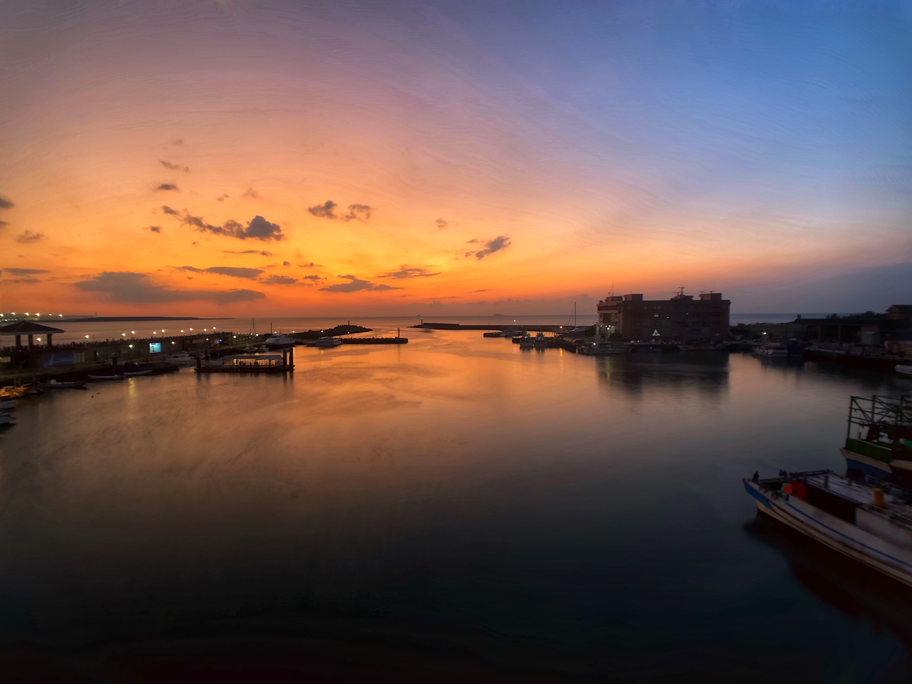

- 


다안삼림공원
대만의 정취를 느끼고 싶다고? 그럼 지금 바로 다안삼림공원으로 출발!
도심속에 위치한 힐링스팟. 여기서 피크닉도 하고 멍때리며 명상하기도 좋다.
단수이
대만청춘영화 재질 노을명소!
대만 청춘영화를 좋아한다면 단수이를 빼놓을 수 없다. 영화 "말할 수 없는 비밀"을 한 번 더 보고 가자. 없던 첫사랑도 있었다고 착각하게 만드는 마성의 단수이.
다다오청
시먼딩에서 쇼핑하고 저녁엔 다다오청가서 맥주 한 잔.
대만의 핫플레이스가 여기구나 느낄 수 있는 곳. 친구들이랑 노을보며 맥주 한 잔 하러 가기 좋은 곳이다.
고미습지
여기가 그 유명한 동양의 우유니!
그림자샷, 노을샷, 반사샷 등 우유니에서 할 수 있는거 여기서 다 하고 가자!
타이베이 101
대만오면 가장 먼저 가야할 곳!
흔하다고 생각할 수 있지만 101층의 빌딩은 생각보다 웅장하며 놀랍다.
중정기념당
타이베이 여행에 빠지지 않는 곳이다
역사적인 의미가 깊은 곳이지만, 나들이 하러 온 사람들, 운동하는 사람들 등 다양한 모습의 대만 현지인을 만날 수 있다.
일월담
이곳을 사랑하지 않을 수 있을까?
넋을 놓고 바라보게되는 풍경, 한가로운 자전거 라이딩, 대만 여행을 계획한다면 가장 먼저 추천해주고 싶은 곳이다.
아이허
한국에 한강 데이트가 있다면, 대만엔 아이허 데이트가 있다!
가오슝 돌아다니다보면 어느샌가 마주치게 될 아이허. 야경명소, 야경 데이트 장소로 유명한 곳이다.
우라이
아직도 베이터우 온천만 가니?
고요한 산 속에서 온천을 즐길 수 있는 우라이만의 독특한 물 색깔을 보고나면 두고두고 생각날 곳이다.
다안삼림공원
대만의 정취를 느끼고 싶다고? 그럼 지금 바로 다안삼림공원으로 출발!
도심속에 위치한 힐링스팟. 여기서 피크닉도 하고 멍때리며 명상하기도 좋다.
단수이
대만청춘영화 재질 노을명소!
대만 청춘영화를 좋아한다면 단수이를 빼놓을 수 없다. 없던 첫사랑도 있었다고 착각하게 만드는 마성의 단수이.